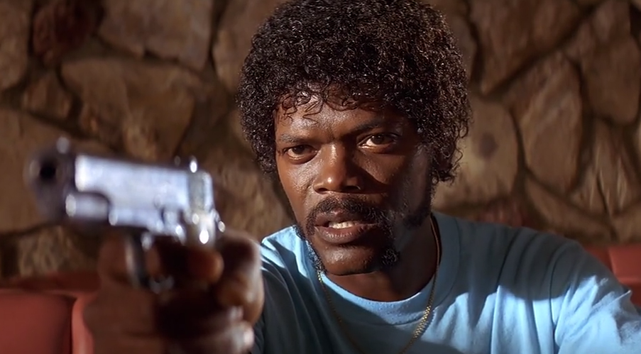
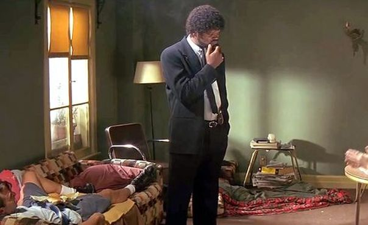
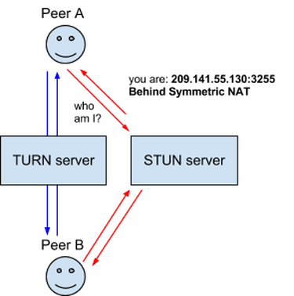
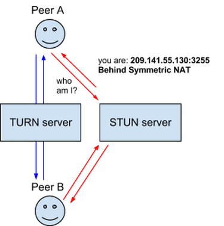
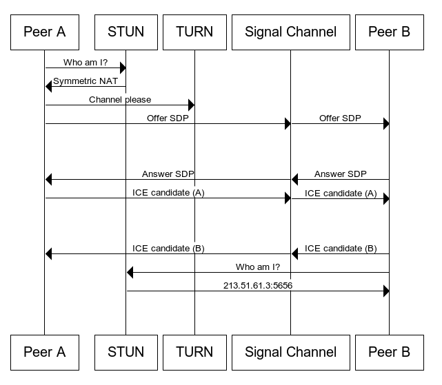
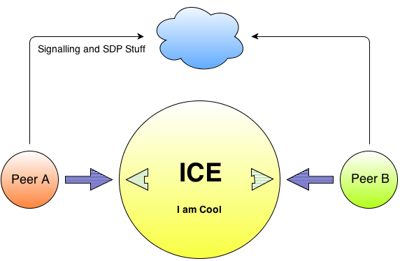

WebRTC
Real Time Collaboration with JS & HTML5
Om Shankar
Amazon, @WalmartLabs, Adobe
JavaScript freak. HTML5 Aficionado.

Why you speak HTML5 & WebRTC in JSfoo?
If something can be done in JavaScript,
it will be eventually done in JavaScript
- Anon.
HTML5 is meaningles without JavaScript APIs
All WebRTC is in JavaScript
Christian Heilmann,
the HTML5 Guru, is speaking at JSfoo
I just want Internet, What the hell is HTML5?
Web as an Application

Communicate & Share? Record & Play? Create and Draw?
Drag Drop, 3D, Video Audio, Games?
You tell me more!
You tell me right now!!
The POWER

Web Real Time Communication
Browser Support


Where is JavaScript?
- Acquiring Video and Audio
getUserMedia~MediaStream - Sharing Streams with peers - AKA Communicating !
RTCPeerConnectionRTCIceCandidate - Sharing data
RTCDataChannel
Acquiring Video and Audio
getUserMedia
var constraints = {video: true, audio: true };
navigator.getUserMedia(constraints, successCallback, errorCallback);
function successCallback(stream) {
var video = document.querySelector("video");
video.src = window.URL.createObjectURL(stream);
}
function errorCallback(error) {
alert("Error: ", error);
}
-
constraints- Must for getUserMedia, specifies Media type, resolution, etc. -
video- HTML5 DOM element
Communicating Streams
RTCPeerconnection
var peerCon = new window.RTCPeerConnection(configuration);
peerCon.addStream(localStream); // got from getUserMedia
peerCon.onaddstream = function(e) {
...
peerCon.addIceCandidate(candidate);
peerCon.onicecandidate = function(e) {
...
peerCon.setLocalDescription(description); peerCon.setRemoteDescription(new RTCSessionDescription(..));
peerCon.createOffer(IceCandidate); peerCon.createAnswer(...)
-
IceCandidate- ICE - f/w to bypass Firewalls -
RTCSessionDescription- Metadata per SDP
ICE Breaker
Communicating Data
RTCDataChannel
var peerCon = new window.RTCPeerConnection( servers, {
optional: [{ RtpDataChannels: true }]
});
peerCon.ondatachannel = function(event) {
receiverChannel = event.channel;
receiverChannel.onmessage = function(event){ receiveDOMElement.innerHTML = event.data; };
};
XmitterChannel = pc.createDataChannel("sendDataChannel", {reliable: false});
XmitterChannel.send('Hello WebRTC');
-
RtpDataChannels: true- Arbitrary data via the same RTCPeerConnection. -
onmessage, etc. - Same API as WebSockets.
ShareFest
Feature Support
getUserMedia Chrome Desktop 20+, Chrome Android 29+
FireFox 17+
Opera, Opera Mobile 12+
RTCPeerConnection Chrome Desktop 20+, Chrome Android 29+
FireFox 22+
RTCDataChannel Chrome Desktop 26+, Chrome Android 29+
FireFox 22+
WebRTC & the Web
Architecture

I don't want to see that image again!
WebRTC: No Firewalls, STUN or TURN
WebRTC: Behind NAT Firewall - STUN
WebRTC: STUN Fails, try TURN
What is STUN, TURN, SDP and ICE?
You tell me! You tell me right now!!
WebRTC: Stuff
Terminologies
-
NAT- Network Address Translation -
ICE- Interactive Connectivity Establishment -
STUN- Session Traversal Utilities for NAT -
TURN- Traversal Using Relays around NAT -
Signal Channel- PUSH enabled communication channel -
SDP- Session Description Protocol
The Exchange - STUN, TURN
 

The Exchange - FLOW
The Exchange - Simple
ICE Breaker
JSfoo Demo APP
WebRTC: Stuff
R & D over Internet
- WebRTC landing page
- WebRTC roadmap in Chrome
- Mozilla - the HTML5 pillar
- NVIDIA Tegra High def conferencing using WebRTC
- World's first WebRTC enabled mobile browser - by Ericsson R&D labs
- 3D communication in browser - by Ericsson R&D labs
Cool Extras
- ASCII Camera
- Audio Recorder
- ShareFest - Send files Directly, P2P
- Who's Talking - Detecting who is speaking in a Conference
- GIF image from Video - Pure JavaScript and HTML5
JavaScript + HTML5 = Awesomeness